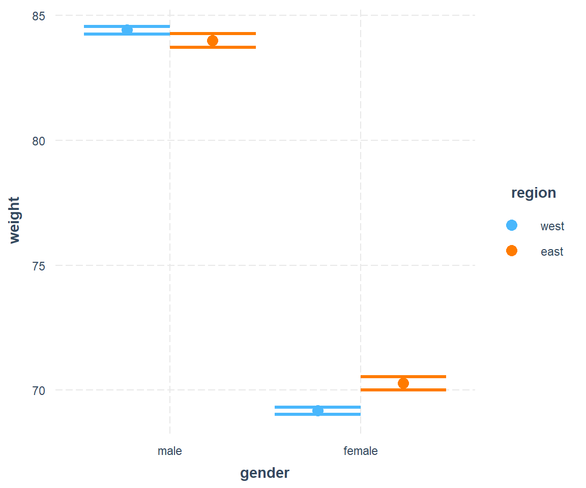

Chapter 10 Fixed effects
10.1 Cross-sectional Data (2 pt)
Suppose you want to learn the effect of price on the demand for back massages. Read in the following data from four Midwest locations (call it crosssection) and print the table with the gt package.
# Crosssection
crosssection <- data.frame(Location = c("Chicago", "Peoria", "Milwaukee", "Madison"),
Year = rep(2003, 4),
Price = c(75, 50, 60, 55),
Quantity = c(2.0, 1.0, 1.5, 0.8))
library(ggplot2)
library(gt)
table_1 <-
gt(data = crosssection) %>%
tab_header(title = "Table 1: Cross-sectional Data") %>%
cols_label(
Location = md("**Location**"),
Year = md("**Year**"),
Price = md("**Price**"),
Quantity = md("**Per Capita<br>Quantity**")
)
# Show the gt Table
table_1| Table 1: Cross-sectional Data | |||
|---|---|---|---|
| Location | Year | Price | Per Capita Quantity |
| Chicago | 2003 | 75 | 2.0 |
| Peoria | 2003 | 50 | 1.0 |
| Milwaukee | 2003 | 60 | 1.5 |
| Madison | 2003 | 55 | 0.8 |
Please create the plot (in Base R or ggplot).

10.2 Panel Data (2 pt)
Read in additional data from Table 2 (call it paneldata).
library(ggplot2)
library(tidyverse)
# Panel Data
paneldata <- data.frame(Location = c("Chicago", "Chicago", "Peoria", "Peoria", "Milwaukee", "Milwaukee", "Madison", "Madison"),
Year = rep(2003:2004, 4),
Price = c(75, 85, 50, 48, 60, 65, 55, 60),
Quantity = c(2.0, 1.8, 1.0, 1.1, 1.5, 1.4, 0.8, 0.7))
table_2 <-
gt(data = paneldata) %>%
tab_header(title = "Table 2: Panel Data") %>%
cols_label(
Location = md("**Location**"),
Year = md("**Year**"),
Price = md("**Price**"),
Quantity = md("**Per Capita<br>Quantity**")
)
table_2| Table 2: Panel Data | |||
|---|---|---|---|
| Location | Year | Price | Per Capita Quantity |
| Chicago | 2003 | 75 | 2.0 |
| Chicago | 2004 | 85 | 1.8 |
| Peoria | 2003 | 50 | 1.0 |
| Peoria | 2004 | 48 | 1.1 |
| Milwaukee | 2003 | 60 | 1.5 |
| Milwaukee | 2004 | 65 | 1.4 |
| Madison | 2003 | 55 | 0.8 |
| Madison | 2004 | 60 | 0.7 |
Please create the plot.
ggplot(paneldata, aes(x=Price, y=Quantity)) +
geom_point() +
labs(title="Relationship between Price and Quantity",
x="Price", y="Quantity") +
geom_smooth(aes(colour = Location), method = "lm", se = FALSE) +
geom_smooth(method = "lm", se = FALSE)
10.3 Fixed Effects Regression
10.3.1 First Difference (2 pt)
Please add two columns, i.e. the change in price (name it P_diff) and the change in quantity (name it Q_diff) to your dataframe (1 pt).
table3 <- paneldata %>%
group_by(Location) %>%
mutate(P_diff = Price - lag(Price),
Q_diff = Quantity - lag(Quantity))
#library(xtable) # may handle formulas in colnames
#print(xtable(table3)), type = "html")
#print(xtable(head(cars)), type = "html")
#print(xtable(table3), type = "html")
library(gt)
gt(data = table3, rowname_col = TRUE, groupname_col=FALSE) %>%
tab_header(title = "Table 3: Data for Difference Equation Estimation.") %>%
cols_label(
Location = md("**Location**"),
Year = md("**Year**"),
Price = md("**Price**"),
Quantity = md("**Per Capita<br>Quantity**"),
P_diff = md("**Delta P**"),
Q_diff = md("**Delta Q**")) | Table 3: Data for Difference Equation Estimation. | |||||
|---|---|---|---|---|---|
| Location | Year | Price | Per Capita Quantity |
Delta P | Delta Q |
| Chicago | 2003 | 75 | 2.0 | NA | NA |
| Chicago | 2004 | 85 | 1.8 | 10 | -0.2 |
| Peoria | 2003 | 50 | 1.0 | NA | NA |
| Peoria | 2004 | 48 | 1.1 | -2 | 0.1 |
| Milwaukee | 2003 | 60 | 1.5 | NA | NA |
| Milwaukee | 2004 | 65 | 1.4 | 5 | -0.1 |
| Madison | 2003 | 55 | 0.8 | NA | NA |
| Madison | 2004 | 60 | 0.7 | 5 | -0.1 |
Run a first difference estimation by regressing change in quantity on change in price (1 pt).
10.3.2 Within Estimator (2 pt)
Run a within fixed effects regression in two ways.
- Function
plm()fromplmpackage. - Replicate time demeaning programmatic in R.
- Calculate the mean of Q and P per individual (group).
- Subtract the individual mean from each observation.
- Regress these time-demeaned observation (with standard lm command).
table4 <- paneldata %>%
group_by(Location) %>%
mutate(P_diff = Price - lag(Price),
Q_diff = Quantity - lag(Quantity),
P_P_mean = Price - mean(Price),
Q_Q_mean = Quantity - mean(Quantity))
library(gt)
gt(data = table4, rowname_col = TRUE, groupname_col=FALSE) %>%
tab_header(title = "Table 4: Data for Within Time Demean Estimation.") %>%
cols_label(
Location = md("**Location**"),
Year = md("**Year**"),
Price = md("**Price**"),
Quantity = md("**Per Capita<br>Quantity**"),
P_diff = md("**Delta P**"),
Q_diff = md("**Delta Q**"),
P_P_mean = md("**P - mean(P)**"),
Q_Q_mean = md("**Q - mean(Q)**")) | Table 4: Data for Within Time Demean Estimation. | |||||||
|---|---|---|---|---|---|---|---|
| Location | Year | Price | Per Capita Quantity |
Delta P | Delta Q | P - mean(P) | Q - mean(Q) |
| Chicago | 2003 | 75 | 2.0 | NA | NA | -5.0 | 0.10 |
| Chicago | 2004 | 85 | 1.8 | 10 | -0.2 | 5.0 | -0.10 |
| Peoria | 2003 | 50 | 1.0 | NA | NA | 1.0 | -0.05 |
| Peoria | 2004 | 48 | 1.1 | -2 | 0.1 | -1.0 | 0.05 |
| Milwaukee | 2003 | 60 | 1.5 | NA | NA | -2.5 | 0.05 |
| Milwaukee | 2004 | 65 | 1.4 | 5 | -0.1 | 2.5 | -0.05 |
| Madison | 2003 | 55 | 0.8 | NA | NA | -2.5 | 0.05 |
| Madison | 2004 | 60 | 0.7 | 5 | -0.1 | 2.5 | -0.05 |
10.3.3 LSDV (1 pt)
Run a LSDV regression, i.e. include all individuals as dummy variables in your standard lm regression.
10.3.4 Comparison (1 pt)
Create a model overview with stargazer. Start with a pooling model. You should have 5 models in total. You need to play around with stargazer options in order to make it good looking. Drop the constant in all your models. Drop model.numbers and dep.var.labels.include or the F statistic. You can relabel column.labels in stargazer as well. Your result should look like this:
paneldata <- data.frame(Location = c("Chicago", "Chicago", "Peoria", "Peoria",
"Milwaukee", "Milwaukee", "Madison", "Madison"),
Year = rep(2003:2004, 4),
Price = c(75, 85, 50, 48, 60, 65, 55, 60),
Quantity = c(2.0, 1.8, 1.0, 1.1, 1.5, 1.4, 0.8, 0.7))
library(sjmisc)
library(tidyverse)
paneldata <- paneldata %>%
group_by(Location) %>%
mutate(dP = last(Price) - first(Price),
dQ = last(Quantity) - first(Quantity),
dP=replace(dP, row_number()==1, NA),
dQ=replace(dQ, row_number()==1, NA),
mean_P = mean(Price),
mean_Q = mean(Quantity),
P_mean_P = Price - mean_P,
Q_mean_Q = Quantity - mean_Q,
Price_ave = Price - ave(Price, Location),
Quantity_ave = Quantity - ave(Quantity, Location)) %>%
mutate_at(.vars = c("Quantity","Price"),
.funs = list("centered" = center)) %>%
ungroup()
# for better comparison in stargazer
paneldata_demeaned <- with(paneldata,
data.frame(Quantity = Quantity - ave(Quantity, Location),
Price = Price - ave(Price, Location)))
# Pooling
pooling <- lm(Quantity ~ Price - 1, data=paneldata)
# First Difference Estimation
FD <- lm(dQ ~ dP -1, data=paneldata)
names(FD$coefficients) <- c('Price')
# Time demean
TDM <- lm(Quantity ~ Price -1, data=paneldata_demeaned)
# Fixed Effects
library(plm)
FE <- plm(Quantity ~ Price -1, data=paneldata,
model="within",
index = c("Location","Year"))
# Least Squares Dummy Variable Estimation (Individual FE)
LSDV <- lm(Quantity ~ Price + Location -1, data=paneldata)# Stargazer Comparison
library(stargazer)
stargazer(pooling, FD, TDM, FE, LSDV, type="text", keep=c("Price"),
column.labels=c("Pooling", "FD", "TD", "FE", "LSDV"),
dep.var.labels.include = FALSE, model.numbers = FALSE,
omit.stat="f")
#>
#> =========================================================================================
#> Dependent variable:
#> ---------------------------------------------------------------------
#> OLS OLS OLS panel OLS
#> linear
#> Pooling FD TD FE LSDV
#> -----------------------------------------------------------------------------------------
#> Price 0.021*** -0.021*** -0.021*** -0.021*** -0.021***
#> (0.002) (0.003) (0.002) (0.003) (0.003)
#>
#> -----------------------------------------------------------------------------------------
#> Observations 8 4 8 8 8
#> R2 0.953 0.950 0.950 0.950 1.000
#> Adjusted R2 0.947 0.933 0.943 0.883 1.000
#> Residual Std. Error 0.314 (df = 7) 0.034 (df = 3) 0.016 (df = 7) 0.024 (df = 3)
#> =========================================================================================
#> Note: *p<0.1; **p<0.05; ***p<0.01